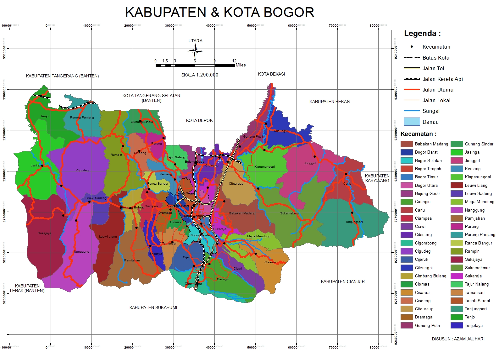
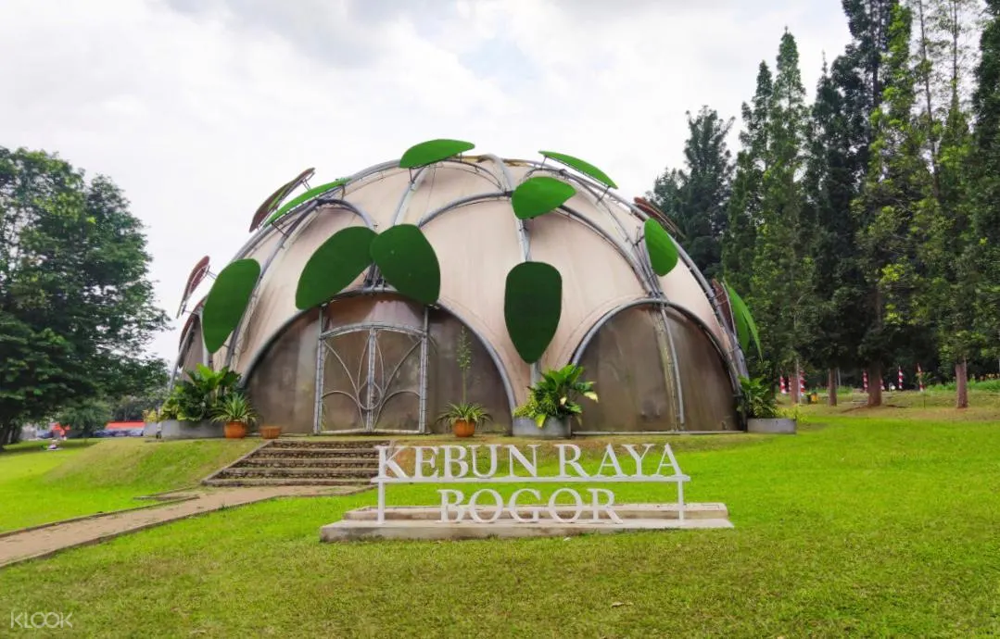

geografis

Kota Bogor terletak diantara 106 480 BT dan 6 360 LS serta mempunyai ketinggian rata rata minimal 190 meter, maksimal 350 meter, kemiringan lereng antara 0-3%, 4-15%, 16-30% dan diatas 40% dengan jarak dari Ibu Kota kurang lebih 60 Km, dikelilingi Gunung Salak, Gunung Pangrango dan Gunung Gede.
Kota Bogor berpenduduk 820.707 jiwa dengan komposisi 419.252 Laki- laki dan perempuan 401.455 jiwa, dikenal dengan sebutan Kota Hujan karena memiliki curah hujan yang tinggi yaitu berkisar 3.500 milimeter pertahunnya.
wisata
Bogor, kota yang dijuluki "Kota Hujan" ini terkenal dengan keindahan alamnya yang memukau dan berbagai tempat wisatanya yang menarik. Anda bisa mengunjungi tempat wisata bertema alam, budaya, kuliner, hingga sejarah.
Kebun Raya Bogor

Kebun Raya Bogor merupakan taman botani tertua di Indonesia. Tempat wisata di Bogor ini merupakan destinasi wajib bagi para pecinta alam dan penjelajah pengetahuan. Didirikan pada tahun 1817, taman ini menyimpan lebih dari 15.000 spesies tumbuhan dari berbagai penjuru dunia, menjadikannya museum botani hidup yang tak tertandingi.